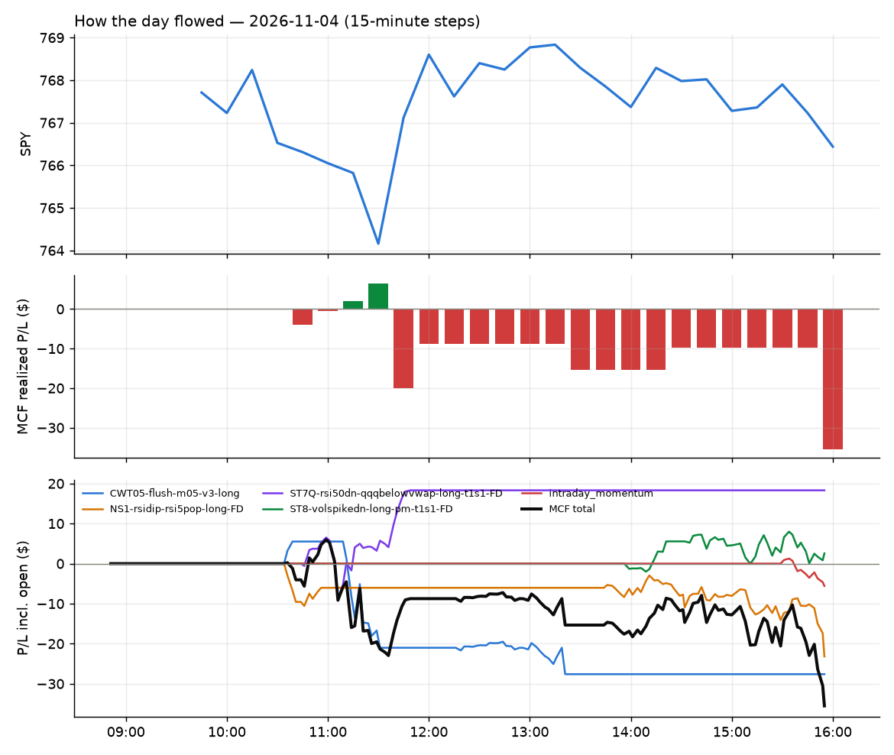
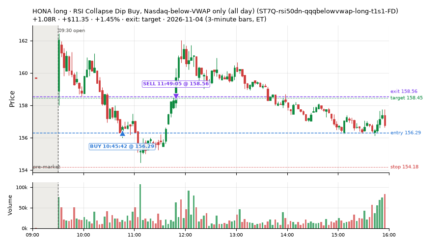
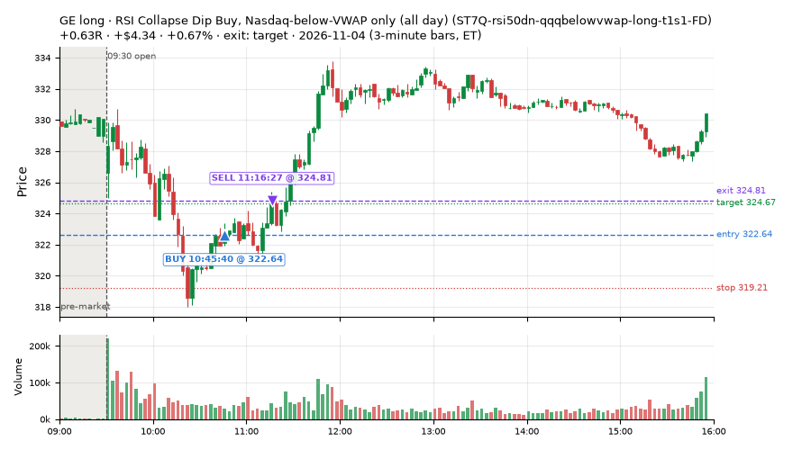
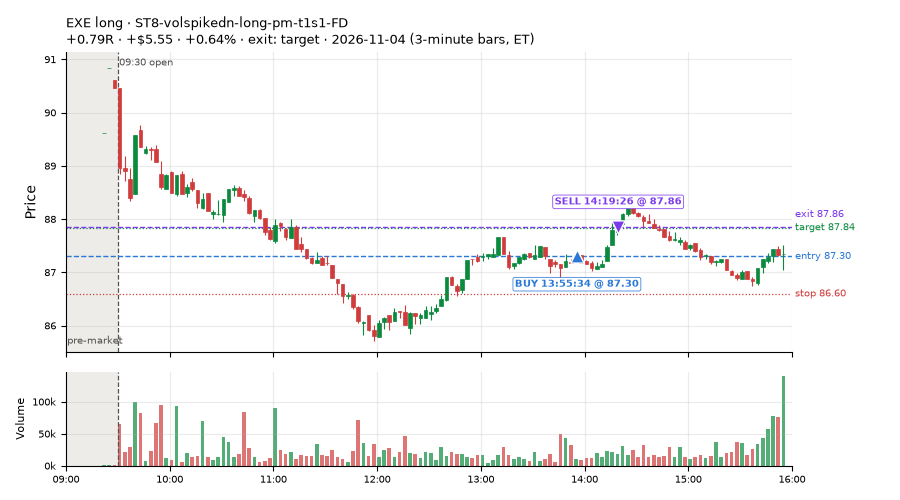
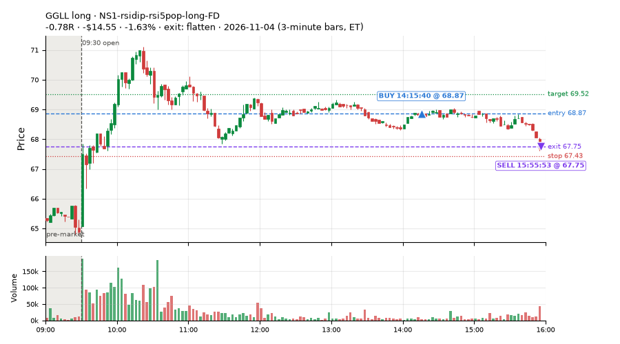
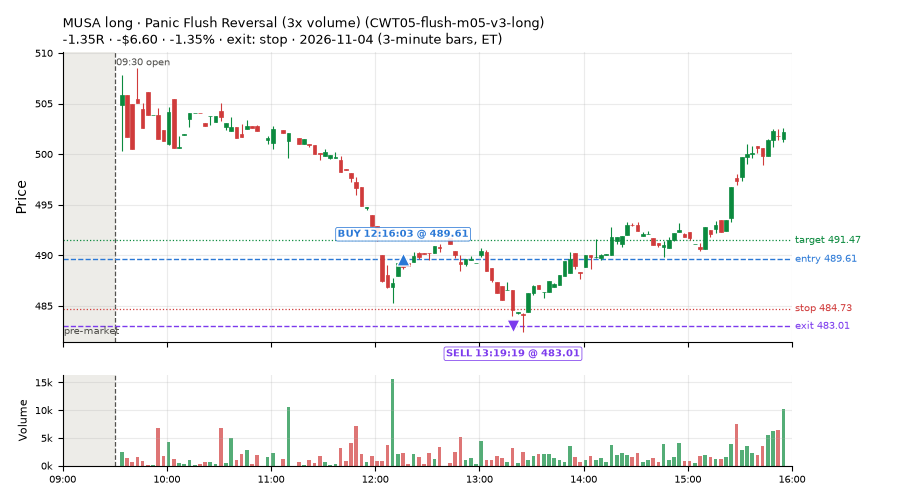
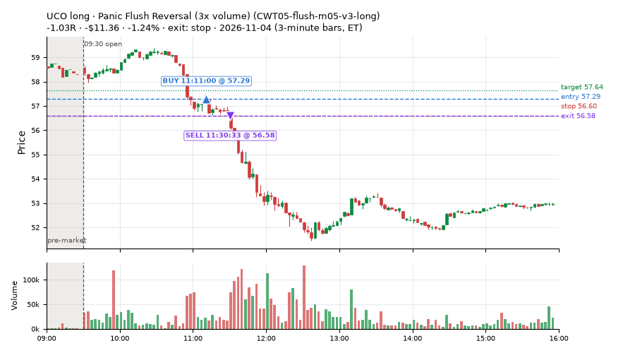
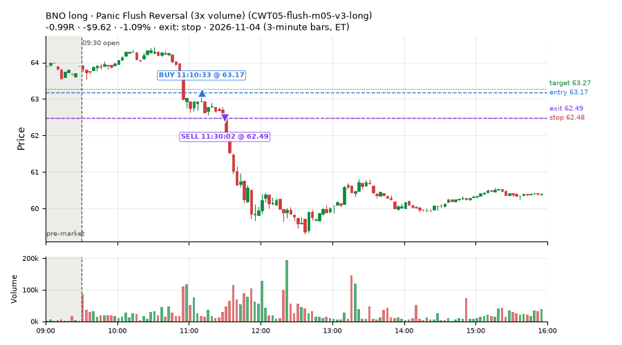
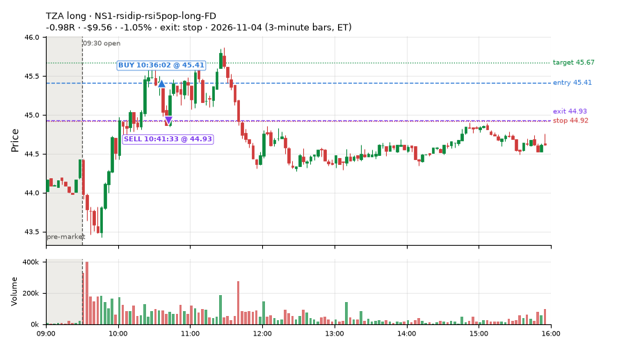

20 trades · win rate 40% · P/L $-35.52
PROBATION: no live setup has passed both locked test periods. 10 owner-directed setups added 2026-10-08 (MarcoFlow top 5 + 5 new), untested live. RW6G1 (RW6 + VWAP band guard) added 2026-10-09, probation.

| Symbol | Setup | Side | In | Out | Entry | Exit | Exit reason | % gained | P/L |
|---|---|---|---|---|---|---|---|---|---|
| HONA | RSI Collapse Dip Buy, Nasdaq-below-VWAP only (all day) (ST7Q-rsi50dn-qqqbelowvwap-long-t1s1-FD) | long | 10:45 | 11:49 | 156.29 | 158.56 | target | +1.45% | $11.35 |
| GE | RSI Collapse Dip Buy, Nasdaq-below-VWAP only (all day) (ST7Q-rsi50dn-qqqbelowvwap-long-t1s1-FD) | long | 10:45 | 11:16 | 322.64 | 324.81 | target | +0.67% | $4.34 |
| EXE | ST8-volspikedn-long-pm-t1s1-FD | long | 13:55 | 14:19 | 87.30 | 87.86 | target | +0.64% | $5.55 |
| Symbol | Setup | Side | In | Out | Entry | Exit | Exit reason | % lost | P/L |
|---|---|---|---|---|---|---|---|---|---|
| GGLL | NS1-rsidip-rsi5pop-long-FD | long | 14:15 | 15:55 | 68.87 | 67.75 | flatten | -1.63% | $-14.55 |
| MUSA | CWT05-flush-m05-v3-long | long | 12:16 | 13:19 | 489.61 | 483.01 | stop | -1.35% | $-6.60 |
| UCO | CWT05-flush-m05-v3-long | long | 11:11 | 11:30 | 57.29 | 56.58 | stop | -1.24% | $-11.36 |
| BNO | CWT05-flush-m05-v3-long | long | 11:10 | 11:30 | 63.17 | 62.49 | stop | -1.09% | $-9.62 |
| TZA | NS1-rsidip-rsi5pop-long-FD | long | 10:36 | 10:41 | 45.41 | 44.93 | stop | -1.05% | $-9.56 |








Signal to fill: median 1s, 90th percentile 3s (20 trades). Bars close each minute; the order follows the bar close.
Best excursion (MFE): median 0.32R; worst (MAE) median 0.62R. 50% of trades never got +0.25R in our favour; 0 reached +1R and still closed at or below 0.
| Symbol | Setup | Best R | Worst R | Closed R |
|---|---|---|---|---|
| MUSA | CWT05-flush-m05-v3-long | +0.43 | -1.14 | -1.35 |
| DIA | intraday_momentum | +0.42 | -0.79 | -0.68 |
| UCO | CWT05-flush-m05-v3-long | +0.07 | -1.04 | -1.03 |
| USO | CWT05-flush-m05-v3-long | +0.07 | -1.06 | -1.01 |
| SPY | intraday_momentum | +0.22 | -0.95 | -0.83 |
| Entry time | Trades | Win | Avg R | P/L |
|---|---|---|---|---|
| 10:30-11:30 | 11 | 64% | -0.02 | $-8.75 |
| 11:30-13:00 | 1 | 0% | -1.35 | $-6.60 |
| 13:00-14:00 | 2 | 50% | +0.24 | $2.96 |
| 14:00-16:00 | 6 | 0% | -0.52 | $-23.13 |
| Setup | Trades | Win | Avg R | Adj R (net of SPY) | Avg R ex-market (all sessions) | P/L |
|---|---|---|---|---|---|---|
| Panic Flush Reversal (3x volume) (CWT05-flush-m05-v3-long) | 7.0 | 43% | -0.47 | -0.53 | -0.18 (beta +2.20, n 32) | $-27.61 |
| NS1-rsidip-rsi5pop-long-FD | 4.0 | 25% | -0.41 | -0.36 | -0.08 (beta +1.30, n 49) | $-23.18 |
| RSI Collapse Dip Buy, Nasdaq-below-VWAP only (all day) (ST7Q-rsi50dn-qqqbelowvwap-long-t1s1-FD) | 3.0 | 100% | +0.76 | +0.77 | +0.34 (beta +1.44, n 6) | $18.30 |
| ST8-volspikedn-long-pm-t1s1-FD | 2.0 | 50% | +0.32 | +0.25 | +0.07 (beta +1.50, n 12) | $2.55 |
| Index Last-Half-Hour Momentum (intraday_momentum) failed Apr-Jun holdout: -0.091R/trade over 147 trades | 4.0 | 0% | -0.55 | +0.14 | -0.29 (beta -0.24, n 38) | $-5.58 |
Market direction (SPY, beta 1) accounted for $-13.40 of today's $-35.52; the rest ($-22.12) came from the setups themselves. Avg R net of SPY: -0.09 (incl. a hedge leg's cost; report only).
25 setups live today. Today: 197 signals, 20 taken, 0 lost because another setup held the symbol (0%). Since 2026-10-09 (19 sessions): 8502 signals, 3471 taken, 745 lost to other setups (9%). Peak open positions today 7 of 400 slots. Earnings blackout removed 1681 symbols before scanning.
Simulated playing time (not live): 4699 what-if trades of signals not taken, avg -0.13R, 49% winners; of them 592 lost to another setup (avg +0.02R).
Silent: IDX1-qqq100-0955-TQQQ-trail, IDX1-qqq100-0955-TQQQ-hold, IDX2-spy075-0945-3x-trail, IDX3-spy075-0955-3x-trail, IDX5-spy050-0945-3x-trail · Crowded out: MF3-open-flowsell-rsi5hi, RW4-ns3-adv150-short-FD, RW4-ns3-adv150-short, MF4-h40-open-flowsell-FD, NS3-failed-vwap-reclaim-short-FD · Starved: MF1-945-flowsell-vwapup, RW6G1-ns2-up3-vwap2sd-short, LIQ-pdl-sweep-open15-vwap-long, ST5-pdbrkup-short-mid-t05s1-FD, ST3-rsi5up-short-pm-t1s1-FD, MF5-flowsell-vwapup-rsi5hi, exhaustion_short-FD, orb20_a, NS2-sma50break-overbought-short, MF1-945-flowsell-vwapup-FD
| Prio | Setup | Today sig / taken | Sessions | Signals / taken / trades | Taken/day | Expected/day | Lost to other setups | Lost to (setup n) | Top skip reasons | SIMULATED: not-taken n / avg R / win | Verdict |
|---|---|---|---|---|---|---|---|---|---|---|---|
| 1 | Early Sellers Above VWAP MF1-945-flowsell-vwapup | 5 / 0 | 9 | 29 / 5 / 5 | 0.56 | 5.33 | 0 | – | spread / quote / size 10, other 8, split-tape short gate 5 | 24 / +0.04R / 29% | starved 0.56 entries/day vs ~5.33 expected |
| 2 | Big Gainer Fade with VWAP Band Guard RW6G1-ns2-up3-vwap2sd-short | 0 / 0 | 11 | 1 / 1 / 1 | 0.09 | 0.40 | 0 | – | – | 0 / – | starved 0.09 entries/day vs ~0.40 expected |
| 3 | Index Dip Bounce 1 TQQQ IDX1-qqq100-0955-TQQQ-trail | 0 / 0 | 14 | 0 / 0 / 0 | 0.00 | – | 0 | – | – | 0 / – | silent no signals in 14 session(s); no expected rate on file |
| 4 | Index Dip Bounce 1 TQQQ (hold) IDX1-qqq100-0955-TQQQ-hold | 0 / 0 | 14 | 0 / 0 / 0 | 0.00 | – | 0 | – | – | 0 / – | silent no signals in 14 session(s); no expected rate on file |
| 5 | Index Dip Bounce 2 3x S&P IDX2-spy075-0945-3x-trail | 0 / 0 | 14 | 0 / 0 / 0 | 0.00 | – | 0 | – | – | 0 / – | silent no signals in 14 session(s); no expected rate on file |
| 6 | Index Dip Bounce 3 3x S&P IDX3-spy075-0955-3x-trail | 0 / 0 | 14 | 0 / 0 / 0 | 0.00 | – | 0 | – | – | 0 / – | silent no signals in 14 session(s); no expected rate on file |
| 7 | Index Dip Bounce 5 3x S&P IDX5-spy050-0945-3x-trail | 0 / 0 | 14 | 0 / 0 / 0 | 0.00 | – | 0 | – | – | 0 / – | silent no signals in 14 session(s); no expected rate on file |
| 8 | Prior-Day Low Sweep Reversal to VWAP LIQ-pdl-sweep-open15-vwap-long | 0 / 0 | 17 | 1 / 1 / 1 | 0.06 | 0.38 | 0 | – | – | 0 / – | starved 0.06 entries/day vs ~0.38 expected |
| 9 | ST5-pdbrkup-short-mid-t05s1-FD ST5-pdbrkup-short-mid-t05s1-FD | 4 / 0 | 18 | 23 / 2 / 2 | 0.11 | 0.78 | 0 | – | split-tape short gate 10, not shortable / shorts off 9, spread / quote / size 1 | 21 / -0.32R / 48% | starved 0.11 entries/day vs ~0.78 expected |
| 10 | ST8-volspikedn-long-pm-t1s1-FD ST8-volspikedn-long-pm-t1s1-FD | 4 / 2 | 18 | 16 / 12 / 12 | 0.67 | 1.05 | 1 | orb20_a 1 | spread / quote / size 3, symbol held by another setup 1 | 4 / -0.22R / 25% | slow 3.3 entries/week; ~18 weeks to 60 trades |
| 11 | RSI Collapse Dip Buy, Nasdaq-below-VWAP only (all day) ST7Q-rsi50dn-qqqbelowvwap-long-t1s1-FD | 14 / 3 | 9 | 17 / 6 / 6 | 0.67 | 1.25 | 0 | – | other 7, spread / quote / size 4 | 11 / +0.31R / 73% | slow 3.3 entries/week; ~18 weeks to 60 trades |
| 12 | ST6-volspikeup-short-mid-t1s1-FD ST6-volspikeup-short-mid-t1s1-FD | 7 / 0 | 18 | 31 / 6 / 6 | 0.33 | 1.24 | 4 | RW4-ns3-adv150-short-FD 3, NS3-failed-vwap-reclaim-short 3, NS3-failed-vwap-reclaim-short-FD 1 | split-tape short gate 13, not shortable / shorts off 5, symbol held by another setup 4 | 23 / -0.09R / 48% | slow 1.7 entries/week; ~36 weeks to 60 trades |
| 13 | ST3-rsi5up-short-pm-t1s1-FD ST3-rsi5up-short-pm-t1s1-FD | 8 / 0 | 18 | 27 / 2 / 2 | 0.11 | 1.35 | 6 | ST2-slope20up-long-am-t05s1-FD 4, RW4-ns3-adv150-short-FD 2, NS3-failed-vwap-reclaim-short 2 | split-tape short gate 12, symbol held by another setup 6, not shortable / shorts off 4 | 20 / -0.04R / 45% | starved 0.11 entries/day vs ~1.35 expected |
| 14 | NS4-pm-vwap-reclaim-oversold-short-FD NS4-pm-vwap-reclaim-oversold-short-FD | 6 / 0 | 18 | 64 / 27 / 27 | 1.50 | 3.57 | 4 | L3-gap-slope-fromopen-FD 3, NS1-rsidip-rsi5pop-long-FD 1 | not shortable / shorts off 13, spread / quote / size 10, split-tape short gate 7 | 37 / +0.07R / 46% | slow 7.5 entries/week; ~8 weeks to 60 trades |
| 15 | Panic Flush Reversal (3x volume) CWT05-flush-m05-v3-long | 14 / 7 | 11 | 50 / 32 / 32 | 2.91 | – | 0 | – | spread / quote / size 13, other 4, daily loss cap 1 | 18 / -0.33R / 50% | slow 14.5 entries/week; ~4 weeks to 60 trades |
| 16 | L3-gap-slope-lowdist-FD L3-gap-slope-lowdist-FD | 18 / 0 | 18 | 293 / 59 / 59 | 3.28 | 9.76 | 8 | RW6-ns2-up3-short-FD 3, NS2-sma50break-overbought-short-FD 3, L3-gap-slope-rsi5hi-FD 3 | not shortable / shorts off 114, daily loss cap 72, split-tape short gate 25 | 227 / -0.20R / 44% | ok 16.4 entries/week |
| 17 | NS1-rsidip-rsi5pop-long-FD NS1-rsidip-rsi5pop-long-FD | 10 / 4 | 18 | 75 / 49 / 49 | 2.72 | 5.39 | 5 | L3-gap-slope-fromopen-FD 5 | spread / quote / size 9, other 7, symbol held by another setup 5 | 26 / -0.15R / 62% | slow 13.6 entries/week; ~4 weeks to 60 trades |
| 18 | Sellers into Strength (all day) MF5-flowsell-vwapup-rsi5hi | 2 / 0 | 13 | 83 / 40 / 40 | 3.08 | 15.47 | 13 | MF5-flowsell-vwapup-rsi5hi-FD 10, MF3-open-flowsell-rsi5hi 2, CWT12-coil-k6-long 1 | symbol held by another setup 13, spread / quote / size 13, other 8 | 42 / +0.11R / 57% | starved 3.08 entries/day vs ~15.47 expected |
| 19 | Big Loser VWAP Reclaim Fade NS3-failed-vwap-reclaim-short | 6 / 0 | 16 | 89 / 46 / 46 | 2.88 | 3.03 | 5 | LIQ-orl-sweep-open15-s25-long 3, heat_fade_short 1, heat_fade_short-FD 1 | not shortable / shorts off 19, spread / quote / size 12, split-tape short gate 6 | 35 / -0.23R / 37% | slow 14.4 entries/week; ~4 weeks to 60 trades |
| 20 | Early Sellers into a Pop MF3-open-flowsell-rsi5hi | 8 / 0 | 13 | 81 / 15 / 15 | 1.15 | 9.19 | 38 | MF3-open-flowsell-rsi5hi-FD 35, MF5-flowsell-vwapup-rsi5hi 13, MF5-flowsell-vwapup-rsi5hi-FD 7 | symbol held by another setup 38, spread / quote / size 11, split-tape short gate 9 | 66 / -0.29R / 39% | crowded-out 38 of 81 signals (47%) lost to setups already holding the symbol |
| 21 | RW7-gapdn-bounce-early-short-FD RW7-gapdn-bounce-early-short-FD | 50 / 0 | 18 | 685 / 348 / 348 | 19.33 | 59.92 | 37 | LIQ-orl-sweep-open15-s25-long 11, RW1-gapdn-bounce-flowsell-short-FD 9, MF2-open-rsimidhi-flowsell-FD 7 | daily loss cap 110, not shortable / shorts off 73, split-tape short gate 70 | 334 / +0.24R / 65% | ok 96.7 entries/week |
| 22 | Afternoon Blow-off Short exhaustion_short | 13 / 0 | 18 | 123 / 55 / 55 | 3.06 | 12.12 | 6 | L3-gap-slope-fromopen-FD 3, RW2-exhaustion-noon-adv150-short-FD 2, L3-gap-slope-rsi5hi-FD 1 | not shortable / shorts off 28, split-tape short gate 28, symbol held by another setup 6 | 66 / +0.04R / 55% | ok 15.3 entries/week |
| 23 | exhaustion_short-FD exhaustion_short-FD | 22 / 0 | 18 | 234 / 81 / 81 | 4.50 | 64.64 | 25 | exhaustion_short 14, RW2-exhaustion-noon-adv150-short-FD 8, L3-gap-slope-fromopen-FD 5 | daily loss cap 53, not shortable / shorts off 37, split-tape short gate 30 | 145 / -0.28R / 39% | starved 4.50 entries/day vs ~64.64 expected |
| 24 | Index Last-Half-Hour Momentum intraday_momentum | 4 / 4 | 18 | 39 / 38 / 38 | 2.11 | 2.37 | 0 | – | daily loss cap 1 | 1 / -0.26R / 0% | slow 10.6 entries/week; ~6 weeks to 60 trades |
| 25 | 20-Minute Opening Range Breakout orb20_a | 2 / 0 | 18 | 66 / 25 / 25 | 1.39 | 6.79 | 0 | – | trigger missed between polls 22, spread / quote / size 8, not shortable / shorts off 6 | 35 / +0.11R / 51% | starved 1.39 entries/day vs ~6.79 expected |
Every trade is attached as a CSV you can open and edit in Excel or Google Sheets. Live page: https://misiti15.github.io/MCF/live/